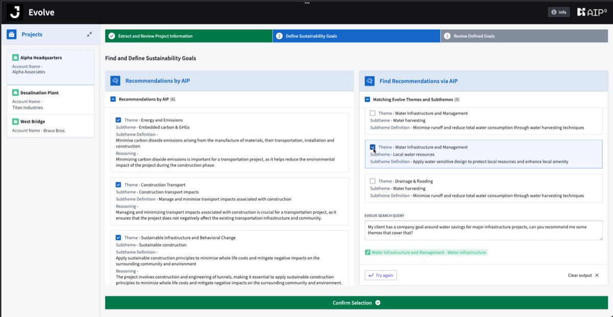

面向可持续解决方案的 AIP
面向可持续解决方案的 AIP 借助大语言模型驱动的洞察力，引导并跟踪项目在环境、社会和经济方面的影响，推动落实客户与公司的承诺，同时衡量与联合国可持续发展目标相一致的表现。
面向可持续解决方案的 AIP 是一款前沿应用，旨在将可持续发展理念深植于项目规划与执行的核心。该系统将项目数据与 Jacobs 丰富的可持续发展专业知识及既有最佳实践相融合，能够推荐有助于产生积极可持续影响的项目目标，并使项目表现契合联合国可持续发展目标及其他 ESG 报告框架。在项目的整个交付生命周期中，系统会对推荐的绩效指标进行严密跟踪，确保从启动到完工始终聚焦可持续发展这一核心。主要特性：
- 大语言模型驱动的可持续发展引擎： 借助 Jacobs 领域专家的最佳实践与洞察，精准锁定与项目最相关的可持续发展目标，同时跟踪环境、社会与经济影响。通过学习历史项目表现，不断优化并提升推荐质量。
- 交互式目标优化： 通过对话式界面使用面向可持续解决方案的 AIP，用户能够定制可持续发展目标，使其完美契合特定项目需求。
- 无缝集成项目管理： 面向可持续解决方案的 AIP 无缝融入既有项目管理平台，并辅以严密的安全措施，全力保障敏感项目数据。
对于任何力求达成宏伟可持续发展基准的组织而言，面向可持续解决方案的 AIP 都是不可或缺的利器，它为实现驱动积极影响的项目成果提供了战略优势。
